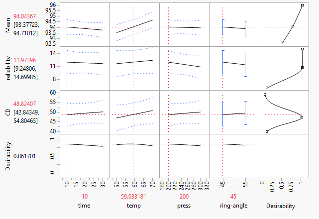

Engineering Design¶
Let’s observe the factory¶
---------------------------------------------------------------------------
ModuleNotFoundError Traceback (most recent call last)
<ipython-input-1-a992647257c4> in <module>
1 import numpy as np
----> 2 import pandas as pd
3 import seaborn as sns
4 sns.set(rc={'figure.figsize':(10,8)})
5 df = pd.DataFrame({
ModuleNotFoundError: No module named 'pandas'
ax=sns.scatterplot(data=df, x="run-order", y="yield", hue=df["ring-angle"].to_list())

Is there a difference between 55 degree focus rings and 45 degrees?
<AxesSubplot:xlabel='ring-angle', ylabel='yield'>

Yes, it is small but measurable; about 1.5%
Consider the Distribution of differences¶

A difference of 1.5% is significant when compared to the typical distribution of differences between random lots
Beware Simpson’s paradox¶

Decisions based on observational data are prone to data collection bias.
It could be that the true effect is the opposite of the observed effect.
Let’s Design an experiment¶
df = pd.DataFrame({
"time":pd.Series([
10,10,10,10,
10,10,10,10,
30,30,30,30,
30,30,30,30
]),
"temperature":pd.Series([
50,50,50,50,
70,70,70,70,
50,50,50,50,
70,70,70,70]),
"pressure":pd.Series([
200,200,300,300,
200,200,300,300,
200,200,300,300,
200,200,300,300]),
})

Optimize¶

Decreasing temperature 1deg from 60 to 59 improves yeild while maintaining reliability and keeping critical dimensions on target (maintaining device performance with respect to RC Delay).
This change allows for standardization of hardware which increases overall throughput.